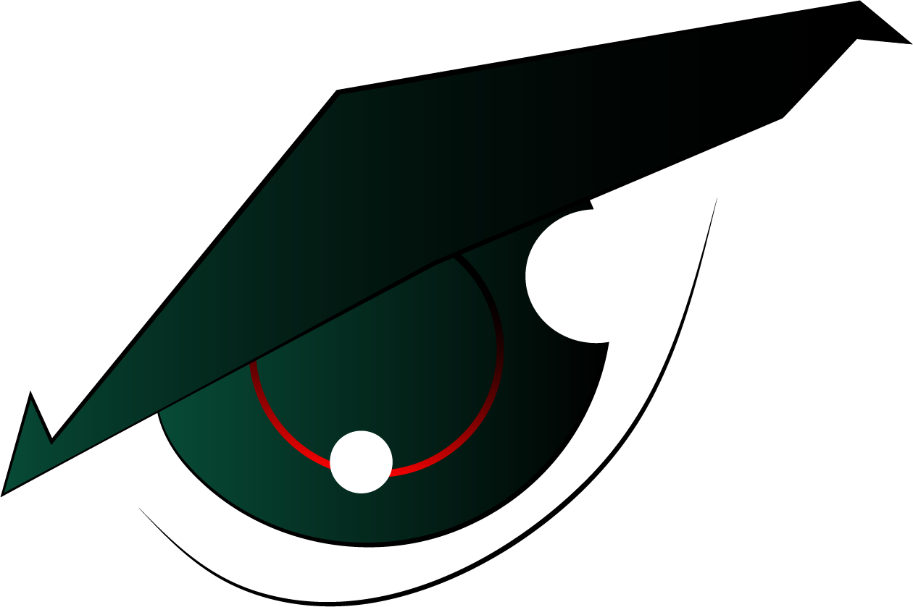

Art Portfolio
Alex Rojas

.png)
Artist Statement
I want to redraw my surroundings to create something new. Rather than accepting reality as is, I want to see my dreams come true for everyone to see. To find rest from the hardship of life and routine, I want to draw a world for me, one that makes me happy.
Day to day I live in this world, seeing and living the same story, reliving the same feelings over again. While I may not be able to escape this cycle, I want to feel something that makes me smile. I want to draw what is in my head, what I feel in life and reshape that life. Drawing becomes a form of freedom, to write the story in a way I see fit, to express the feelings compressed within me, and twist them around in a way I could not do in life.
I want to have control of my world, to tell a tale where hardships are overcomed. While answers to problems aren't easy to find in life, one can only dream about overcoming adversities. With pen in hand and paper as a base, I can create a brand new world, where my mind feels at ease with problems that will soon disappear.
I draw stories to express how I feel, and also to feel what I want to feel, to control a world as I see fit, and give all my emotions a happily ever after.
Reading Response 4: Nuclear War